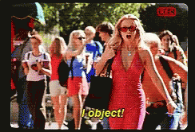

If Fish, Then Lamp
Aarhus Comedy Club Set (May 4th)
Dr Charles T. Gray, Datapunk ![]()
Cultural identity
When I meet people in Denmark, they invariably say,
You’re Australian? Put another shrimp on the barbie!
But Australians call them prawns, and what we put on the barbie are sausages—snags in Australian Ocker—so it’s more accurate to say, put another snag on the barbie.
Crocodile Dundee (1986) [1] is a bit confused about Australian identity 1.
Australians are confused about Australian identity.
Here’s how it goes when I meet another Australian.
Nice to meet you, Charles. And where do you come from?
Melbourne.
I mean, where do you really come from?
Melbourne.
No, I mean, where were you born?
Melbourne.
But, where were your parents born?
Melbourne.
Well, where were their parents born?
And here’s where it gets a bit tricky. Because the only real Australians are Aboriginals, the rest of us got off the boat pretty recently. But if I were to ask
Where the fuck were your grandparents born?
I’d be rude.
So, to make sense of my Jewish Chinese-Transylvanian Australian diasporic identity, I enrolled in cultural studies—because the only way to sort that out was to read essays written in the 1970s by a Palestinian-American deconstructing 19th century opera [2].
I found myself in philosophical seminars. Some theorist would deliver a dense analysis of Elizabeth Bishop’s treatment of the villanelle in her poem One Art [3] to be met with a pompous question from some git in the audience,
Yes, but hwhat is your ontology?
I’ve never felt very comfortable with terms like ontology and epistemology, can never seem to pin down their meaning. My understanding of ontology is that it is the study of being, how the existence of a thing is defined—which, frankly, has never once helped me catch a train.
Professional identity
I graduated into the global financial crisis of the late 2000s.
So, the world didn’t even give me a job to identify with, and told me my education was less than worthless.
It was time for pragmatism; I decided to get a ‘real’ job, be an accountant—or somesuch.
I enrolled in a mathematics degree to learn how to crunch numbers.
Here’s where mathematics starts you off:
Suppose there exists an ,
and, worse still,
Let the identity define the map from to .
But the longer you stay in mathematics, the more grounded it becomes.
Mathematics becomes a guide for answering real-world questions, such as,
What is the correct dosage to treat this condition?
and
How do we ensure the trains run on time?
Answering questions
You might be vaguely familiar with current methodologies for answering questions with real-world data—heard these mentioned in passing, once or twice:
- algorithms;
- statistics;
- data science;
- machine learning;
- large language models; and
- artificial intelligence.
You know, grrl talk.
I’ve been doing grrl talk with data—in research, start-ups, and corporate—for nigh-on 15 years.
And now I’ve seen how it’s done, I’m here to say,
I have no earthly idea how the trains run on time.
Mind your Ps & Qs
To understand how broken data methodology is in practice, think of a question like this:
given we have some data, then we may conclude this result,
formally speaking,
which reads as,
if , then .
A company (all companies) may wish to know, given our previous revenue, how much money will we make next year?
Suppose they made 2 million in the first year, 1 million in the second, and 3 million in the third. We might take the average and say fourth-year profit will be somewhere around 2 million—hedging our bets.
So the s here are previous annual revenue data points, and the is the estimate for next year.
Easy, right?
The modern data stack
But data now arrives in billions of rows each day. The bigger the company, the more data, the more complex the stack 2.
It’s now necessary to have stacks of people to solve the equation:
- gather the s (data engineers);
- produce the s (business analysts and data scientists); and
- carry the s to the s (platform engineers).
Notably, none of these people define the question—that is, the .
Instead, they’re employed by leadership—the ones who pose the question—who, very helpfully, went to business school, where it seems they were taught that defining or is someone else’s job.
If fish, then lamp
What will our revenue be next year?
Every day, analysts confidently present in boardrooms the results of data analysis,
If fish, then lamp—with 97.2342% accuracy!
wherein fish and lamp stand for numbers that have nothing to do with the question posed and no one knows how far they’ve drifted from intention.
Answering the right question
Logicians are developing ways to step back and ask,
Is our faithful in this complex system of people interoperating with tools?
A powerful way to do this is to construct an olog—

So, to ensure we are answering the right questions, we must ask this of data:
References
Footnotes
To be fair, I’ve never actually seen Crocodile Dundee, and this line is the only thing I know about the film.↩︎
‘A modern data stack is a collection of tools and cloud data technologies used to collect, process, store, and analyze data. All the tools and technologies in a modern data stack are designed to handle large volumes of data, support real-time analytics, and enable data-driven decision-making.’ [4]↩︎